<template id="beat-3-template">
  <div data-composition-id="beat-3-proof" data-width="1920" data-height="1080" data-start="0" data-duration="7.3">

    <!-- L1: Background with canvas grain -->
    <canvas class="grain-canvas" width="1920" height="1080"></canvas>

    <!-- L2: Globe -->
    <div class="globe-wrapper">
      
    </div>

    <!-- L3: Stats -->
    <div class="stats-row">
      <div class="stat-block" id="stat-block-1">
        <div class="stat-glow"></div>
        <div class="stat-top">
          <div class="stat-num" id="stat-currencies">135</div>
          <div class="stat-suffix" id="suffix-currencies">+</div>
        </div>
        <div class="stat-desc">currencies and payment<br/>methods supported</div>
      </div>
      <div class="stat-divider" id="divider-1"></div>
      <div class="stat-block" id="stat-block-2">
        <div class="stat-glow"></div>
        <div class="stat-top">
          <div class="stat-num" id="stat-uptime">0.000</div>
          <div class="stat-suffix" id="suffix-uptime">%</div>
        </div>
        <div class="stat-desc">historical uptime<br/>for Stripe services</div>
      </div>
      <div class="stat-divider" id="divider-2"></div>
      <div class="stat-block" id="stat-block-3">
        <div class="stat-glow"></div>
        <div class="stat-top">
          <div class="stat-num" id="stat-subs">200</div>
          <div class="stat-suffix" id="suffix-subs">M+</div>
        </div>
        <div class="stat-desc">active subscriptions<br/>managed on Stripe Billing</div>
      </div>
    </div>

    <!-- L4: Particles -->
    <canvas class="particles-canvas" width="1920" height="1080"></canvas>

    <!-- L5: SVG connecting lines -->
    <svg class="connect-svg" viewBox="0 0 1920 1080" xmlns="http://www.w3.org/2000/svg">
      <line class="connect-line connect-line-1" x1="540" y1="540" x2="820" y2="540" />
      <line class="connect-line connect-line-2" x1="1100" y1="540" x2="1380" y2="540" />
    </svg>

    <style>
      @import url('https://fonts.googleapis.com/css2?family=Inter:wght@300;400;600&display=block');

      [data-composition-id="beat-3-proof"] {
        width: 1920px;
        height: 1080px;
        overflow: hidden;
        position: relative;
        background: #061B31;
        font-family: 'Inter', sans-serif;
      }

      /* L1: Grain canvas */
      [data-composition-id="beat-3-proof"] .grain-canvas {
        position: absolute;
        top: 0;
        left: 0;
        width: 1920px;
        height: 1080px;
        opacity: 0.03;
        z-index: 1;
        pointer-events: none;
      }

      /* L2: Globe */
      [data-composition-id="beat-3-proof"] .globe-wrapper {
        position: absolute;
        top: 50%;
        left: 50%;
        width: 1000px;
        height: 1000px;
        margin-left: -500px;
        margin-top: -500px;
        opacity: 0.25;
        z-index: 2;
      }
      [data-composition-id="beat-3-proof"] .globe {
        width: 100%;
        height: 100%;
        object-fit: contain;
      }

      /* L3: Stats */
      [data-composition-id="beat-3-proof"] .stats-row {
        position: absolute;
        top: 0;
        left: 0;
        width: 100%;
        height: 100%;
        display: flex;
        align-items: center;
        justify-content: center;
        gap: 0;
        z-index: 5;
        perspective: 1200px;
      }
      [data-composition-id="beat-3-proof"] .stat-block {
        display: flex;
        flex-direction: column;
        align-items: center;
        min-width: 380px;
        text-align: center;
        position: relative;
        padding: 40px 50px;
        opacity: 0;
      }
      [data-composition-id="beat-3-proof"] .stat-glow {
        position: absolute;
        top: 50%;
        left: 50%;
        width: 300px;
        height: 300px;
        margin-left: -150px;
        margin-top: -150px;
        border-radius: 50%;
        background: radial-gradient(circle, #533AFD 0%, transparent 70%);
        opacity: 0;
        z-index: -1;
        pointer-events: none;
      }
      [data-composition-id="beat-3-proof"] .stat-top {
        display: flex;
        align-items: baseline;
        justify-content: center;
      }
      [data-composition-id="beat-3-proof"] .stat-num {
        font-size: 120px;
        font-weight: 300;
        color: #FFFFFF;
        letter-spacing: -0.03em;
        line-height: 1;
      }
      [data-composition-id="beat-3-proof"] .stat-suffix {
        font-size: 120px;
        font-weight: 300;
        color: #FFFFFF;
        letter-spacing: -0.03em;
        line-height: 1;
        opacity: 0;
      }
      [data-composition-id="beat-3-proof"] .stat-desc {
        font-size: 20px;
        font-weight: 400;
        color: #64748D;
        text-align: center;
        margin-top: 16px;
        line-height: 1.4;
        opacity: 0;
      }
      [data-composition-id="beat-3-proof"] .stat-divider {
        width: 1px;
        height: 120px;
        background: rgba(255, 255, 255, 0.1);
        opacity: 0;
        transform: scaleY(0);
      }

      /* L4: Particles canvas */
      [data-composition-id="beat-3-proof"] .particles-canvas {
        position: absolute;
        top: 0;
        left: 0;
        width: 1920px;
        height: 1080px;
        z-index: 3;
        pointer-events: none;
      }

      /* L5: SVG connecting lines */
      [data-composition-id="beat-3-proof"] .connect-svg {
        position: absolute;
        top: 0;
        left: 0;
        width: 1920px;
        height: 1080px;
        z-index: 4;
        pointer-events: none;
      }
      [data-composition-id="beat-3-proof"] .connect-line {
        stroke: #533AFD;
        stroke-width: 2;
        stroke-opacity: 0.3;
        fill: none;
        stroke-dasharray: 280;
        stroke-dashoffset: 280;
      }
    </style>

    <script src="https://cdn.jsdelivr.net/npm/gsap@3.14.2/dist/gsap.min.js"></script>
    <script>
      window.__timelines = window.__timelines || {};
      var S = '[data-composition-id="beat-3-proof"] ';
      var tl = gsap.timeline({ paused: true });

      /* ── Seeded PRNG (mulberry32) ── */
      function mulberry32(a) {
        return function() {
          a |= 0; a = a + 0x6D2B79F5 | 0;
          var t = Math.imul(a ^ a >>> 15, 1 | a);
          t = t + Math.imul(t ^ t >>> 7, 61 | t) ^ t;
          return ((t ^ t >>> 14) >>> 0) / 4294967296;
        };
      }

      /* ── L1: Deterministic grain on canvas ── */
      (function() {
        var grainCanvas = document.querySelector(S + '.grain-canvas');
        var gCtx = grainCanvas.getContext('2d');
        var rng = mulberry32(123);
        var imgData = gCtx.createImageData(1920, 1080);
        var data = imgData.data;
        for (var i = 0; i < data.length; i += 4) {
          var v = (rng() * 255) | 0;
          data[i] = v;
          data[i + 1] = v;
          data[i + 2] = v;
          data[i + 3] = 255;
        }
        gCtx.putImageData(imgData, 0, 0);
      })();

      /* ── L2: Globe slow rotation ── */
      tl.fromTo(S + '.globe-wrapper',
        { rotation: 0 },
        { rotation: 8, duration: 7.3, ease: 'sine.inOut' },
        0
      );

      /* ── L4: Deterministic particles ── */
      var pCanvas = document.querySelector(S + '.particles-canvas');
      var pCtx = pCanvas.getContext('2d');
      var pRng = mulberry32(77);
      var dots = [];
      for (var i = 0; i < 40; i++) {
        dots.push({
          x: pRng() * 1920,
          y: pRng() * 1080,
          r: 1 + pRng() * 2.5,
          vx: (pRng() - 0.5) * 0.4,
          vy: (pRng() - 0.5) * 0.4,
          alpha: 0.15 + pRng() * 0.35
        });
      }

      var particleProxy = { progress: 0 };
      function drawParticles() {
        pCtx.clearRect(0, 0, 1920, 1080);
        var p = particleProxy.progress;
        for (var j = 0; j < dots.length; j++) {
          var d = dots[j];
          var px = d.x + d.vx * p * 600;
          var py = d.y + d.vy * p * 600;
          px = ((px % 1920) + 1920) % 1920;
          py = ((py % 1080) + 1080) % 1080;
          pCtx.beginPath();
          pCtx.arc(px, py, d.r, 0, 6.2832);
          pCtx.fillStyle = 'rgba(255, 255, 255, ' + d.alpha + ')';
          pCtx.fill();
        }
      }

      tl.to(particleProxy,
        { progress: 1, duration: 7.3, ease: 'none', onUpdate: drawParticles },
        0
      );

      /* ── Entry: zoom in from scale 0.92 + blur (whole scene) ── */
      tl.from(S + '.stats-row',
        { scale: 0.92, filter: 'blur(16px)', duration: 0.5, ease: 'expo.out' },
        0
      );
      tl.from(S + '.globe-wrapper',
        { scale: 0.92, opacity: 0, filter: 'blur(16px)', duration: 0.5, ease: 'expo.out' },
        0
      );
      tl.from(S + '.particles-canvas',
        { scale: 0.92, opacity: 0, filter: 'blur(16px)', duration: 0.5, ease: 'expo.out' },
        0
      );

      /* ════════════════════════════════════════════════════
         STAT 1: "135+" — ZOOM BURST
         t=0.5–1.8s: Starts massive (scale 3, centered, blurred),
         rapidly shrinks/sharpens, slides LEFT to row position
         ════════════════════════════════════════════════════ */
      tl.fromTo(S + '#stat-block-1',
        { scale: 3, opacity: 0, filter: 'blur(20px)', x: 300 },
        { scale: 1, opacity: 1, filter: 'blur(0px)', x: 0, duration: 0.8, ease: 'expo.out' },
        0.5
      );
      /* Suffix "+" snaps on with overshoot scale */
      tl.fromTo(S + '#suffix-currencies',
        { opacity: 0, scale: 1.8 },
        { opacity: 1, scale: 1, duration: 0.25, ease: 'back.out(3)' },
        1.1
      );
      /* Label fades in */
      tl.to(S + '#stat-block-1 .stat-desc',
        { opacity: 1, duration: 0.3, ease: 'power1.out' },
        1.5
      );

      /* ════════════════════════════════════════════════════
         STAT 2: "99.999%" — COUNTER ROLL
         t=1.3–2.5s: Block drops from above, counter rolls
         from 0.000 to 99.999, "%" snaps with overshoot
         ════════════════════════════════════════════════════ */
      /* Drop in from above */
      tl.fromTo(S + '#stat-block-2',
        { y: -80, opacity: 0 },
        { y: 0, opacity: 1, duration: 0.5, ease: 'back.out(1.5)' },
        1.3
      );
      /* Counter rolls 0 → 99.999 */
      var counter2 = { val: 0 };
      tl.to(counter2,
        { val: 99.999, duration: 1.0, ease: 'power2.out',
          onUpdate: function() {
            var el = document.querySelector(S + '#stat-uptime');
            if (el) el.textContent = counter2.val.toFixed(3);
          }
        },
        1.3
      );
      /* "%" suffix snaps on with overshoot */
      tl.fromTo(S + '#suffix-uptime',
        { opacity: 0, scale: 1.6 },
        { opacity: 1, scale: 1, duration: 0.25, ease: 'back.out(3)' },
        2.2
      );
      /* Label fades in */
      tl.to(S + '#stat-block-2 .stat-desc',
        { opacity: 1, duration: 0.3, ease: 'power1.out' },
        2.3
      );

      /* ════════════════════════════════════════════════════
         STAT 3: "200M+" — FLIP IN
         t=2.1–3.2s: Card flips toward viewer on X axis
         (rotationX -90 → 0), "M+" fades in after flip
         ════════════════════════════════════════════════════ */
      tl.fromTo(S + '#stat-block-3',
        { rotationX: -90, opacity: 0, transformPerspective: 1200 },
        { rotationX: 0, opacity: 1, transformPerspective: 1200, duration: 0.6, ease: 'power3.out' },
        2.1
      );
      /* "M+" suffix fades in separately after flip */
      tl.fromTo(S + '#suffix-subs',
        { opacity: 0, y: 10 },
        { opacity: 1, y: 0, duration: 0.3, ease: 'power2.out' },
        2.6
      );
      /* Label fades in */
      tl.to(S + '#stat-block-3 .stat-desc',
        { opacity: 1, duration: 0.3, ease: 'power1.out' },
        2.8
      );

      /* ════════════════════════════════════════════════════
         POST-ENTRANCE (t=3.0+):
         Dividers, connecting lines, radial glows
         ════════════════════════════════════════════════════ */

      /* Dividers appear */
      tl.to(S + '#divider-1',
        { opacity: 1, scaleY: 1, duration: 0.4, ease: 'power2.out' },
        3.0
      );
      tl.to(S + '#divider-2',
        { opacity: 1, scaleY: 1, duration: 0.4, ease: 'power2.out' },
        3.15
      );

      /* SVG connecting lines draw in */
      tl.to(S + '.connect-line-1',
        { strokeDashoffset: 0, duration: 0.8, ease: 'power2.inOut' },
        3.0
      );
      tl.to(S + '.connect-line-2',
        { strokeDashoffset: 0, duration: 0.8, ease: 'power2.inOut' },
        3.2
      );

      /* Radial glow pulses behind each stat */
      tl.to(S + '.stat-glow',
        { opacity: 0.12, duration: 0.6, stagger: 0.15, ease: 'power1.out' },
        3.4
      );
      tl.to(S + '.stat-glow',
        { opacity: 0.22, duration: 0.8, stagger: 0.15, ease: 'sine.inOut' },
        4.0
      );
      tl.to(S + '.stat-glow',
        { opacity: 0.12, duration: 0.8, stagger: 0.15, ease: 'sine.inOut' },
        4.8
      );
      tl.to(S + '.stat-glow',
        { opacity: 0.18, duration: 0.8, stagger: 0.15, ease: 'sine.inOut' },
        5.6
      );

      /* ── Exit: zoom through at t=7.0 ── */
      tl.to(S + '.stats-row',
        { scale: 1.15, opacity: 0, filter: 'blur(20px)', duration: 0.3, ease: 'power3.in' },
        7.0
      );
      tl.to(S + '.globe-wrapper',
        { scale: 1.15, opacity: 0, filter: 'blur(20px)', duration: 0.3, ease: 'power3.in' },
        7.0
      );
      tl.to(S + '.particles-canvas',
        { opacity: 0, filter: 'blur(20px)', duration: 0.3, ease: 'power3.in' },
        7.0
      );
      tl.to(S + '.connect-svg',
        { opacity: 0, filter: 'blur(20px)', duration: 0.3, ease: 'power3.in' },
        7.0
      );

      window.__timelines['beat-3-proof'] = tl;
    </script>
  </div>
</template>
